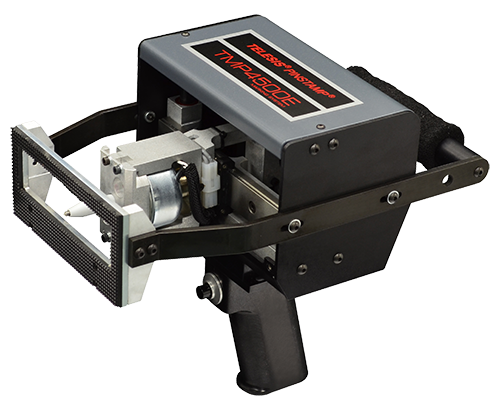

Handheld Dot Peen Marking Machine
A powerful piece of handheld equipment, this dot peen marker eliminates the need for air. The TMP4500E makes deep marks, and is easy to hold.

Features
- 1″ x 4″ (25.4mm x 101.6mm) marking window
- Rugged, low-maintenance rack and pinion driven X/Y platform
- Marks a wide range of materials from soft plastics to hardened steel — up to Rc60
- Double strike feature allows dot to be marked twice when additional depth is an issue
- Shutter assembly protects marking head from solid contaminants
- Available with 2 controllers:
Self-Contained, state-of-the-art TMC470 controller features two serial ports, USB port, and Ethernet port.
Self-Contained, state-of-the-art TMC600 controller features a durable touchscreen and an intuitive user interface, Merlin Touch software - Dot density up to 200 dots-per-inch (79 dots-per-centimeter)
- Choice of interchangeable marking pin types for depths from 0.001″ – 0.018″ (0.03mm – 0.45mm)
- Pin travel accommodates surface irregularities to 0.25″ (6mm)
- Automatically generates serial numbers, time, date and shift codes
- Easily interfaced to PLCs (Programmable Logic Controllers) and Host Computers
Optional Accessories
- Rotary fixtures for marking circumferences of cylindrical parts
- Marking head mounting post, including programmable Z-axis
- Quick disconnect marking head mounting post for a handheld version
- Panel-mount and IP/NEMA Rated Controllers